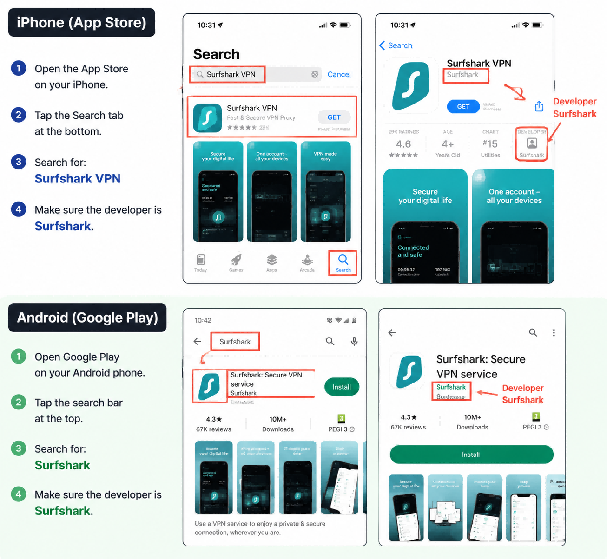
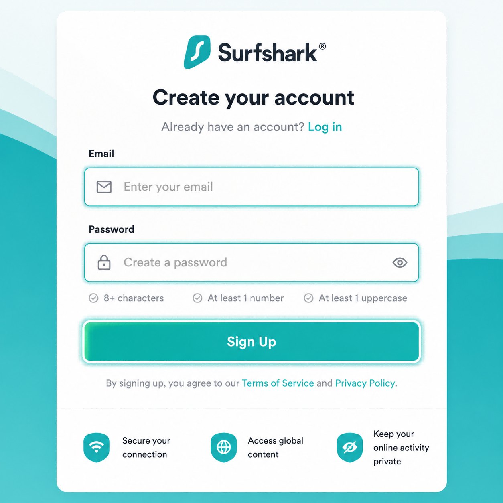
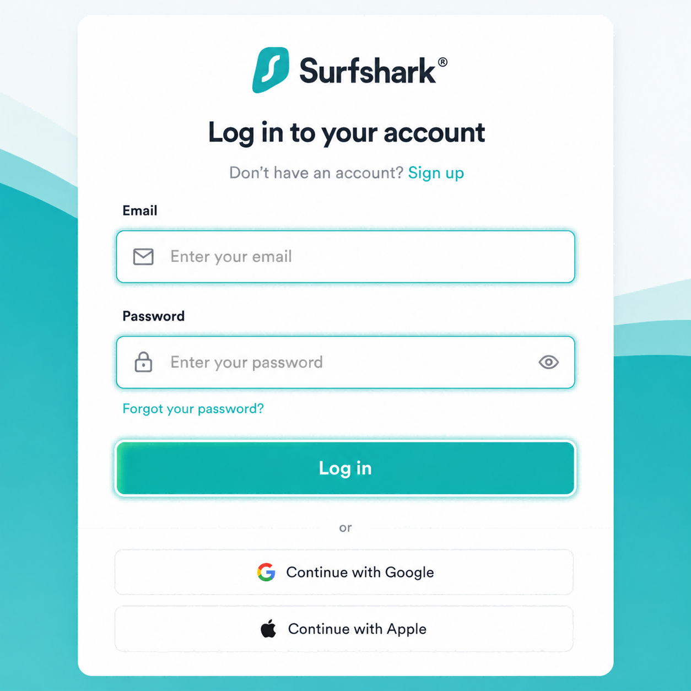
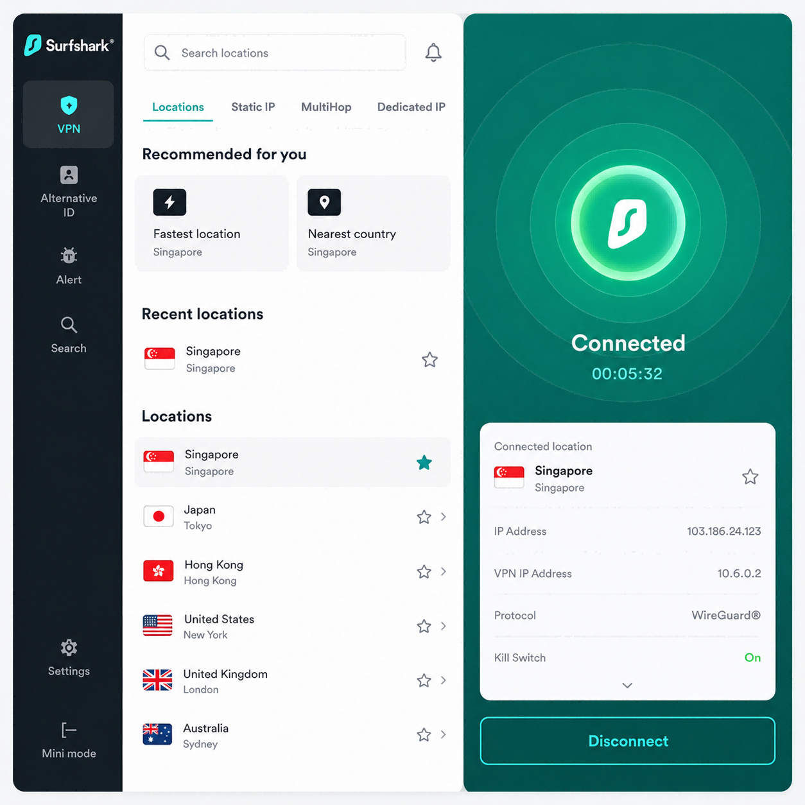
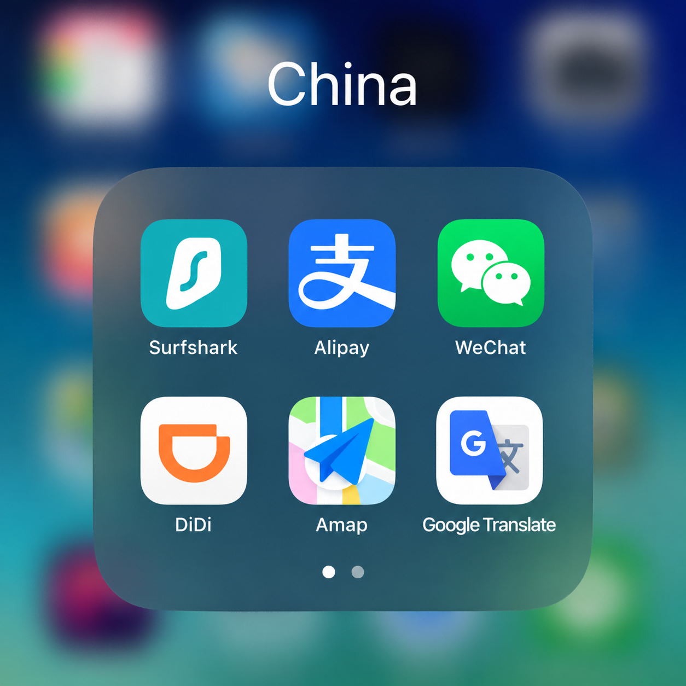

How to Set Up a VPN Before Flying to China
TL;DR — The Short Version
If you're visiting China, install and test your VPN before your flight. The biggest mistake first-time visitors make isn't choosing the wrong VPN. It's landing in China and then trying to download one. For this guide, we'll use Surfshark as an example — it's beginner-friendly, available on all major devices, and takes less than 10 minutes to set up.
Why You Need to Do This Before You Fly
Every month, I see the same thing happen. Someone lands in China, turns off airplane mode, opens Instagram — and nothing loads. Then they try Gmail. Nothing. Then Google Maps. Still nothing.
At that point they start searching: "Best VPN for China."
Unfortunately, that's exactly the wrong time to start looking. Many VPN websites can be difficult to access once you're already in China. The solution is simple: install and test everything before you leave home.
Why You Might Need a VPN in China
A guide for first-time visitors
Most everyday services in China work smoothly:
- Alipay
- DiDi
- Food delivery
- High-speed trains
But many services commonly used in Western countries are unavailable without a VPN. These include:
- Google Search
- Gmail
- Google Maps
- YouTube
- X (Twitter)
If you rely on any of those services, prepare before your trip.
How to Stay Connected in China? The answer isn't any single app — it's preparing before you fly. Below we'll walk through the setup using Surfshark as an example, but the same principles apply to the provider currently available on your device — the key is having something installed and tested. Don't overthink which one.
Step 1: Download a VPN (Example: Surfshark)
Choose your device and install Surfshark before traveling.
iPhone
Open the App Store and search for: Surfshark VPN
Developer: Surfshark
Android
Open Google Play and search for: Surfshark
Developer: Surfshark

Step 2: Create Your Account
Open Surfshark. Create an account using your email address. Choose a subscription plan.
Use an email address you can easily access while traveling. Trust me — trying to reset passwords on airport WiFi after a 12-hour flight is not fun.

Step 3: Log In Before Your Flight
Open the app. Sign in. Make sure everything works.
This sounds obvious, but it's where a surprising number of people get stuck. I've had friends arrive in China only to discover they forgot their password and couldn't access their email to reset it. Solve that problem now, not later.

Step 4: Connect to a Server
Open Surfshark. Choose a nearby location. Good options include:
- Japan
- Singapore
- South Korea
Generally, closer servers mean better speed. You don't need to overthink this — just pick one and test it. Exact performance changes over time, so don't be surprised if one location works better than another on any given day.

Step 5: Test Everything
Before your trip, connect to Surfshark and verify that:
- Gmail opens
- YouTube loads
- Google Maps works
- Instagram refreshes
- WhatsApp sends messages
If all five work, you're ready.
Step 6: Create a "China" Folder
This sounds silly. It's actually one of the best travel hacks I know.
Create a folder on your phone called "China" and put these apps inside:
- Surfshark
- Alipay
- Apple Maps / Amap
- DiDi
- Google Translate
When you land, everything is in one place. No searching through dozens of apps while a taxi driver waits.

Common Questions
Do I Need a VPN All the Time?
No. Most Chinese apps work better without one. I usually turn my VPN on only when I need Gmail, Google, YouTube, Instagram, or WhatsApp. For Alipay payments, I often turn it off first — some VPNs interfere with the connection and the payment spinner just spins.
Can I Install It After Landing?
Maybe. Sometimes yes. Sometimes no. I wouldn't risk it. Install everything before your trip.
Is Surfshark the Only Option?
No. Check what's currently available for your device and location, and test before departure. Which VPN works best can change over time — what's more important is having a working VPN installed before your flight.
💡 Pro Tips From People Who Live Here
Keep Two Browsers Installed
Sometimes one browser behaves differently from another. Having both Chrome and Safari (or Chrome and Edge) gives you options.
Save Important Information Offline
Before your flight, save your hotel address, flight information, and emergency contacts. Take screenshots. Don't rely entirely on cloud services.
Test on Mobile Data Too
Some VPNs behave differently on WiFi and mobile networks. Test both before you travel.
Don't Panic If One Server Is Slow
Switch to Japan, Singapore, or South Korea — usually one of them will perform better.
Final Checklist Before You Fly
- VPN app installed (e.g. Surfshark in this example)
- Logged in successfully
- Gmail tested
- YouTube tested
- Password saved somewhere safe
- Added to your China folder
- Hotel address saved offline
- Emergency contacts saved
If you've done all that, you're already better prepared than most first-time visitors. And future-you will be very grateful when the plane lands.
Get the Free China Arrival Checklist
The exact setup guide I send to friends before they visit China. VPN, eSIM, Alipay, essential apps — all in one place.
Get the Free Checklist